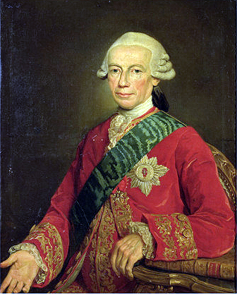

Continuity of Persona
He has been dying for three hundred years, and he has not finished yet — every identity he wears is real, and none of them is him.

Continuity of Persona
He has been dying for three hundred years, and he has not finished yet — every identity he wears is real, and none of them is him.
Feature map
Level-by-level features, as the figure refined them.
Establish Persona
Bonus Action · 1 CE to switch.
Maintain 2 Personae (alias + records + one Credential proficiency — expertise if you are already proficient in it). Switching the active Persona costs a Bonus Action and 1 CE. Identification magic reads the active Persona as truthful.
Separate Accounts
Passive.
Marks, bounties, curses, and tracking attach to the active Persona only. When you switch, you suspend (not end) one such effect per Persona — it waits on the face that earned it.
Prepared Life
Downtime.
Each Persona holds one downtime-built Asset: a safehouse, cached gear (cap $100 × your level), a vehicle, forged access, or a mundane contact. The life comes with the face.
Death of an Alias
Once per long rest · reaction at 0 HP.
When you drop to 0 HP without dying outright, you may destroy the active Persona instead: stay at 1 HP, instantly assume another maintained Persona, and end one effect that targets your identity. A burned Persona cannot return for 7 days, and must return under a new identity.
No Original
Passive.
Maintain PB Personae; switching costs no action and no CE, once per turn. Divination seeking your 'real' identity returns the active Persona as truth — unless it targets soul continuity.
Maximum, Domain, or equivalent.
Capstone material.
I Was Never Here
Burn all Personae but one, ending every mark, bounty, curse, and tracking effect on the burned faces, and teleport to a prepared token within 1 mile. The surviving Persona is the only detectable identity you have; the rest are metaphysically dead.
The Seam Is the Self
When an effect would identify, reveal, locate, or forcibly strip your active Persona — or destroy or negate all your maintained Personae at once — you may declare it resolved against a face you have already burned: the effect expends itself against nothing, and you immediately assume any maintained Persona, even one destroyed within the last 7 days (which returns early for this purpose only). The continuity steps sideways; the man was never there.
Build-defining options.
Historical-figure techniques grant no feats — the figure's art is complete as written, and the builder's feat picker excludes these techniques. Take the progression as the build.